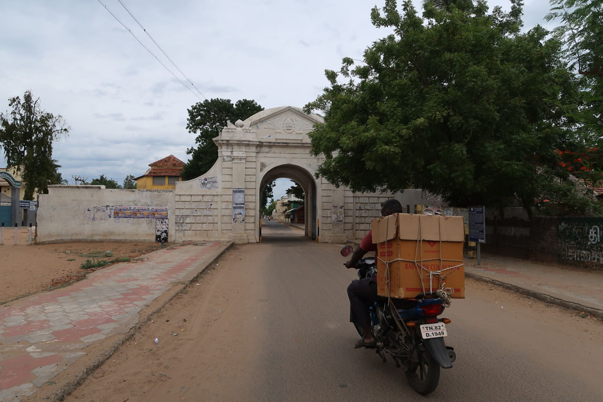
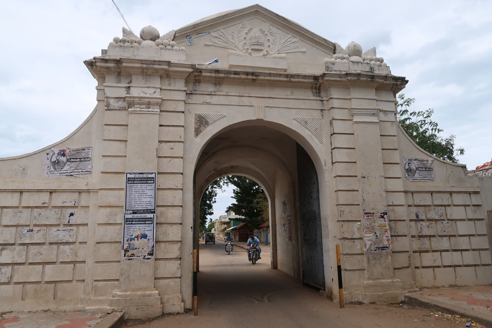
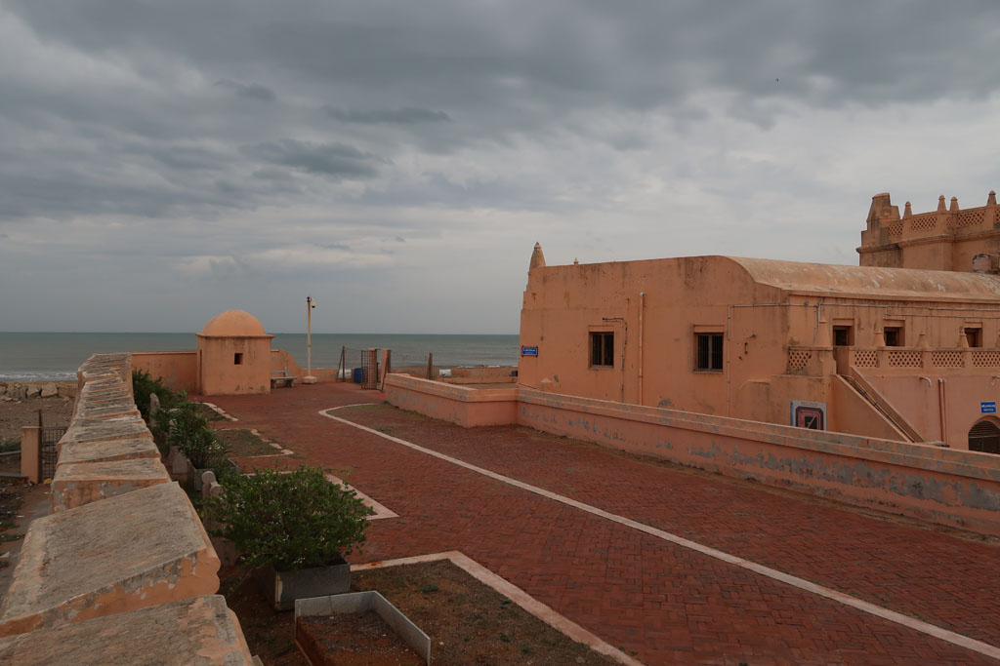
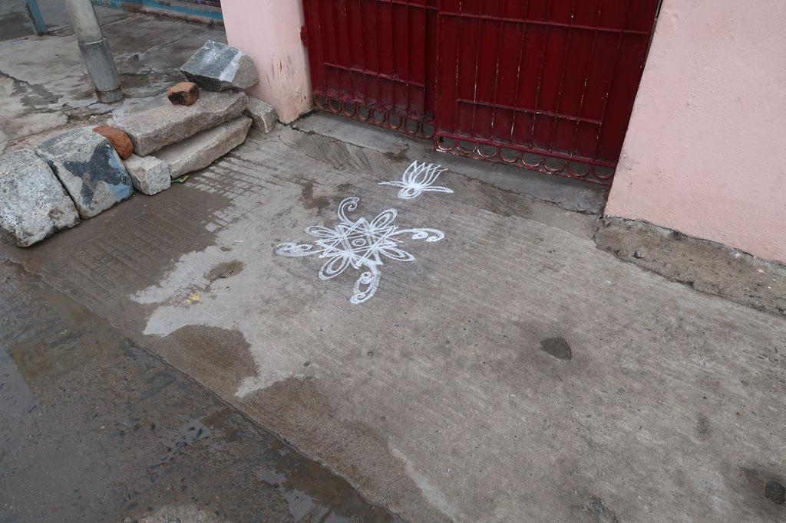
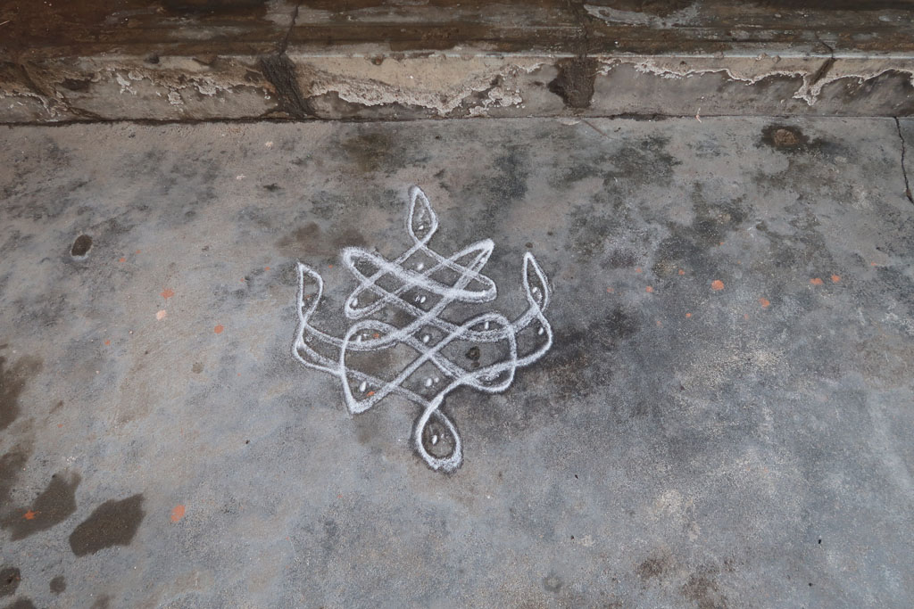

Tamil Nadu / Tharangambadi
6h30 réveil
7h50 checkout
8h00 tuk tuk pour la gare routière
8h15 direction Karikal 40Rx4
10h30 arrivés à Karikal nous attendons le bus pour Tharangambadi (Tranquebar)


11h00 Marche à pieds pour rejoindre notre hotel situé à l’extérieur du village.
11h30 on repart vers le village, qui se résume à quelques bouis-bouis avant l’entrée de la ville danoise fortifiée. Qui ne contient quant à elle que des écoles et vieilles maisons coloniales. Il fait très chaud. On se retrouve à l’abri du soleil sous une pergola d’un hôtel très chic. Lemon juice, plain soda, pepsi, 7 up 472R.
13h00 retour à l’hôtel en passant par la boulangerie locale
16h00 retour en ville, visite du fort, du musée et de la maison du gouverneur. Sur le chemin nous sommes repassés par le marchand de douceurs.
Nous nous faisons adopter par un chien galeux dont on arrive pas à se débarrasser. Arrêt boisson/selfie à un kiosque devant le fort. Bovonto, Merino, Mirinda, plain soda, water 130R
18h00 impossible de se débarrasser du chien. On rentre dans un petit bouiboui pour manger un fried rice gargantuesque et 3 parottas, on prend aussi 2 parottas à emporter 100R le tout.



19h00 retour hôtel en achetant de l’eau et qq gateaux. On commande un thermos de café.
20h00 comptes et journal.